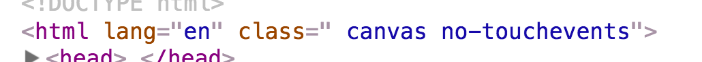
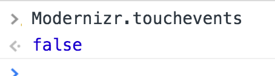

H2 - P2021
Développement web
Cours 05
- github : https://github.com/brunosimon/hetic-p2021
- site : http://bruno-simon.com/hetic/p2021/
- contact : bruno.simon@hetic.net
Responsive
Capacité d'un site web à s'adapter à son environnement de visualisation
Le responsive ne concerne pas que la résolution
En opposition avec l'ancienne pratique qui consistait à faire plusieurs sites et à rediriger l'utilisateur selon le device détecté
META VIEWPORT
Par défaut, les navigateurs mobile et certains navigateurs tablette vont tenter d'adapter le design du site en dézoomant
Ce comportement va nous gêner car nous souhaitons adapter nous même le design
Introduite par Apple avec l'arrivée de l'iPhone, la balise meta viewport permet de faire cela
Elle met à disposition plusieurs propriétés à mettre dans l'attribut content séparées par des virgules
- width
largeur de fenêtre viewport (300 | device-width) - height
hauteur de fenêtre viewport (400 | device-height)
- initial-scale
zoom initial (1 | 0.3) - minimum-scale
zoom minimum (1 | 0.3) - maximum-scale
zoom maximum (1 | 0.3) - user-scalable
autoriser ou non l'utilisateur à zoomer (yes | no)
Empêcher le zoom initial du navigateur
et empêcher l'utilisateur de zoomer
Pour tester le site en conditions, nous pouvons utiliser le devtools de Chrome
(CMD + ALT + I ou CTRL + SHIFT + I)
Et cliquer sur cet icon
Rajouter width=device-width permet aussi de supprimer le délais de 300ms
Ce délais permettait au navigateurs de s'assurer que l'utilisateur n'était pas en train de faire un double tap pour zoomer
Cette meta n'ayant jamais été proposée au W3C ce dernier à proposé sa propre version fonctionnant en CSS avec des propriétés similaires
@-ms-viewport {
width:device-width;
zoom:1;
user-zoom:fixed;
}
@viewport {
width:device-width;
zoom:1;
user-zoom:fixed;
}
N'est pratiquement supportée que par IE
Reset
Par défaut, les navigateurs proposent une feuille de style de base (padding sur le body, marge sous un paragraphe, font par défaut, etc.)
Cette feuille de style initial varie selon le navigateur
Il faudrait pouvoir la réinitialiser pour avoir le même résultat quelque soit le navigateur
Il existe plusieurs CSS dont c'est le but
Le reset choisi doit être ajouté avant tout autre CSS et dès le début de l'intégration
Détection
Il peut arriver qu'on ait besoin de détecter quelles sont les capacités du device
- Est-ce que c'est un écran tactile
- Est-ce que le navigateur supporte le WebGL
- Est-ce que le navigateur supporte les transitions
- ...
Détecter ces features manuellement prendrait beaucoup de temps et on risquerait de faire des erreurs
La librairie Modernizr permet de le faire facilement
- Aller sur la page de téléchargement
- Choisir les features que l'on souhaite détecter
- Cliquer sur BUILD
- Cliquer sur Download de la ligne Build
- Rajouter le JS dans la page, à l'intérieur du <head>
Modernizr va rajouter des classes dans la balise <html>

Ces données seront aussi accessible en JS

Icons
Chaque site à besoin d'icônes (et pas que le favicon)
Les icônes peuvent apparaître dans les favoris, sur la home du smartphone, dans l'onglet, etc.
Le site Real Favicon Generator permet de les générer facilement
- Uploader une image 260x260
- Définir les différentes options mises à disposition
- Générer
- Télécharger le Favicon package et le placer avec les ressources du site
- Récupérer le code HTML et l'ajouter dans la balise <head>
Media queries
Technique permettant d'adapter la feuille de style en fonction du périphérique et de ses différents critères
Peut-être appliquée de 3 façons différentes :
En HTML
<link rel="stylesheet" href="smallscreen.css" media="condition"/>
En CSS
@media condition
{
/* Mon CSS */
}
En Javascript
<script>
if(window.matchMedia( 'condition' ).matches)
{
/* Mon JS */
}
</script>
En général, on utilise la solution CSS
Anciens critères (CSS2)
- screen
- tv
- ...
Nouveaux critères
- aspect-ratio
- width
- height
- orientation
- pixel-ratio
- device-*
- min-*
- max-*
- ...
Exemples simples
@media (width: 700px)@media (min-width: 700px)@media (min-device-width: 700px)@media (min-width: 700px) and (max-width: 1000px)@media (min-device-pixel-ratio: 1.5)@media tv and (orientation: portrait)@media screen@media printExemple avec préfixe
@media (-webkit-min-device-pixel-ratio: 1.5), (min-device-pixel-ratio: 1.5)Compatibilité
Exemples
Treehouse : http://teamtreehouse.com
Orion : http://orion-groupecera.com
JR & associée : http://www.jr-associee.com
Événements
Si vous avez développé le site pour du desktop, vous avez probablement écouté des événements tels que click, mousemove, keydown, etc.
Malheureusement, beaucoup d'événements ne fonctionneront pas de la même manière sur des devices touch
Il faudra donc utiliser des événements similaires mais compatibles : touchstart, touchmove, touchend, deviceorientation, etc.
if(Modernizr.touchevents)
{
window.addEventListener('touchmove', (event) =>
{
console.log(event.touches[0].clientX, event.touches[0].clientY)
})
}
else
{
window.addEventListener('mousemove', (event) =>
{
console.log(event.clientX, event.clientY)
})
}
Lorsque vous simulez un device touch avec le dev tools de Chrome, celui-ci va aussi simuler les événements de touch à la place des événements de souris
Il est aussi possible de simuler l'orientation du device en faisant ESC, en allant dans l'onglet Sensors et en activant l'orientation
window.addEventListener('deviceorientation', (event) =>
{
console.log(event.alpha)
console.log(event.beta)
console.log(event.gamma)
})
procéssus
Faire un site responsive concerne à la fois la créa et le développement
- Soit le créa s'y connait bien en front et prépare des maquettes responsive
- Soit le dev est bon en créa et improvise le responsive
Et le mobile first ?
Le mobile first implique de faire les créas et le développement en commençant par les versions mobiles puis en s'occupant des autres devices par la suite
Cette pratique permet de s'assurer d'avoir une expérience optimisée pour le device le plus contraignant pour ensuite s'occuper des devices plus flexibles et moins limités
Cette tendance vient des problèmes de performance et d'ergonomie des smartphones, mais aussi des statistiques d'utilisation
Le mobile first présente aussi comme désavantage une dégradation de la version desktop
Bien qu'optimisé, le site aura tendance à être inutilement simple, vide et sans immersion sur desktop
Doit-on faire du mobile first ?
Cela dépend
- Quelle est la région ciblée ?
- Quel est l'utilisateur ciblé ?
- Dans quel cadre le site va-t-il être utilisé ?
- Est-ce que c'est un site de contenu ou expérienciel ?
Aller plus loin
Images
Grâce au responsive, on peut avoir une même page qui fonctionne sur mobile et desktop sauf que les images chargées sont les mêmes
Il serait dommage de charger une énorme image prévue pour le desktop sur du mobile
srcset
L'attribut srcset d'une balise <img> permet de définir plusieurs sources et de laisser choisir le navigateur
<img
width="100%"
src="image-test-1280.png"
srcset="image-test-320.png 320w,
image-test-640.png 640w,
image-test-1280.png 1280w"
>
Chaque source est accompagnée de critères tels que sa largeur afin de donner des informations au navigateur sans qu'il ait à la télécharger
Compatibilité
picture
La balise <picture> est une autre solution similaire sauf qu'il est nécessaire de spécifier soi-même les conditions
<picture>
<source srcset="image-test-320.png" media="(max-width:320px)">
<source srcset="image-test-640.png" media="(max-width:640px)">
<source srcset="image-test-1280.png" media="(min-width:641px)">
<img src="image-test-320.png" width="100%">
</picture>
Compatibilité
Aller plus loin
Conclusion
Rendre votre site responsive est une priorité
Prévoyez-le en amont et dans le budget
Testez sur plein de devices différents